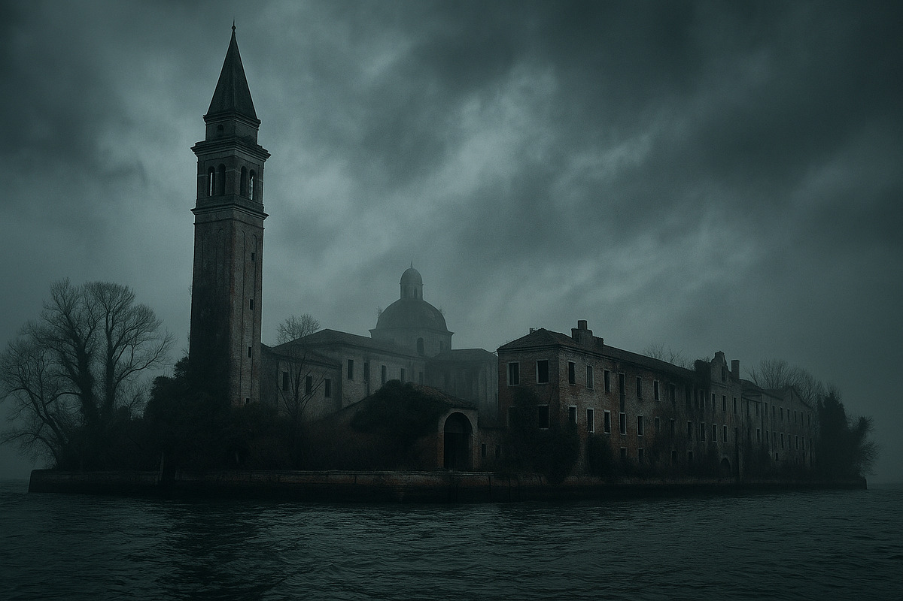

Entre las aguas de Venecia se esconde una isla abandonada cuyo pasado está marcado por la enfermedad, el sufrimiento y la muerte. Se llama Poveglia, aunque muchos la conocen como la isla de los fantasmas. A simple vista parece un lugar devorado por la naturaleza, con edificios en ruinas y pasillos cubiertos de vegetación. Sin embargo, su historia esconde algunos de los episodios más oscuros de Italia.
Durante el siglo XIV, cuando la peste negra arrasó Europa, Poveglia fue utilizada como lugar de aislamiento para los enfermos. Miles de personas fueron trasladadas allí para evitar que la epidemia se extendiera por Venecia. Muchos murieron sin volver a ver a sus familias. La isla también terminó convirtiéndose en un lugar de enterramiento masivo y, según los relatos populares, alrededor de 160.000 víctimas habrían sido quemadas allí.
Pero el horror no terminó con las epidemias. Durante el siglo XX, algunos edificios de la isla fueron utilizados como hospital psiquiátrico. Con el tiempo surgieron relatos sobre supuestos experimentos médicos, lobotomías y pacientes sometidos a prácticas crueles. Una de las leyendas más conocidas habla de un médico que terminó perdiendo la razón y se arrojó desde el campanario del hospital. Se dice que una misteriosa niebla lo envolvió antes de morir. Aunque no existen pruebas que confirmen esta historia, su leyenda sigue alimentando el misterio de Poveglia.
En 1968, las instalaciones sanitarias cerraron definitivamente y la isla quedó abandonada. Décadas después, los exploradores británicos Matt Nadin y Andy Thompson recorrieron sus edificios en ruinas. Durante su visita encontraron antiguas camas, habitaciones deterioradas y pasillos completamente desiertos. Uno de los momentos más inquietantes ocurrió cuando aseguraron escuchar una campana en medio del silencio. Un sonido difícil de olvidar en un lugar donde ya no vive nadie.
Actualmente, Poveglia es considerada uno de los lugares más embrujados del mundo. Hay quienes aseguran haber escuchado voces, pasos y sonidos inexplicables entre sus ruinas. Ninguno de estos fenómenos ha sido demostrado, pero su terrible pasado ha convertido la isla en un escenario perfecto para las historias de terror. Hoy, la vegetación continúa devorando sus edificios y el silencio reina sobre sus antiguos caminos. Quizá los fantasmas solo existan en las leyendas. Pero después de todo lo que ocurrió en Poveglia, hay una pregunta que resulta difícil ignorar: ¿y si algunos lugares nunca consiguen desprenderse de su pasado?
A los pies del monte Fuji, en Japón, se encuentra Aokigahara, un bosque conocido como el mar de árboles. A simple vista parece un lugar hermoso, cubierto de vegetación, musgo y árboles centenarios. Sin embargo, su ambiente esconde una historia que ha despertado la curiosidad y el temor de miles de personas.
Una de las características más sorprendentes de este bosque es su extraño silencio. La vegetación es tan densa que apenas deja pasar la luz y amortigua los sonidos del exterior. Algunos visitantes describen la sensación de estar completamente aislados del mundo. Además, el terreno está lleno de rocas volcánicas y raíces que hacen que el paisaje resulte especialmente difícil de reconocer.
En Japón existen antiguas creencias sobre los yūrei, espíritus que, según el folclore japonés, permanecen vinculados al mundo de los vivos. Con el tiempo, estas leyendas se relacionaron con Aokigahara. Algunas historias cuentan que los visitantes han escuchado pasos detrás de ellos o susurros entre los árboles, aunque al darse la vuelta no encuentran a nadie. No existen pruebas de fenómenos sobrenaturales, pero estas historias han contribuido a crear su misteriosa reputación.
Cuenta una leyenda moderna que un fotógrafo visitó el bosque durante una mañana de otoño. Mientras fotografiaba los árboles cubiertos de niebla, tomó una imagen de un sendero aparentemente vacío. Al revisar la fotografía, descubrió una silueta al fondo, entre los árboles. Pensó que sería otro visitante, pero en las siguientes imágenes aquella figura parecía acercarse. En la última fotografía, el sendero estaba completamente vacío. El fotógrafo aseguró que nunca había visto a nadie durante aquella visita. Nunca consiguió explicar lo que había capturado su cámara.